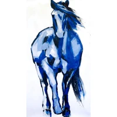
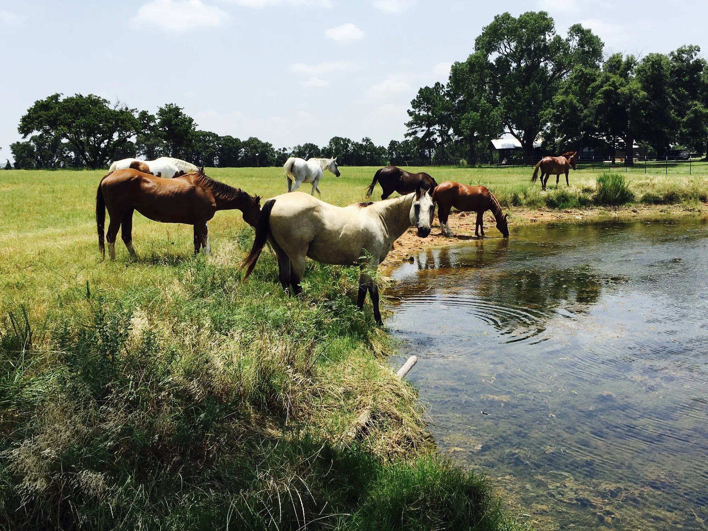
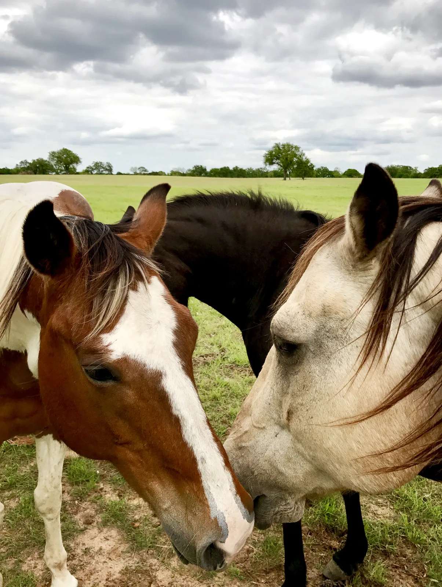
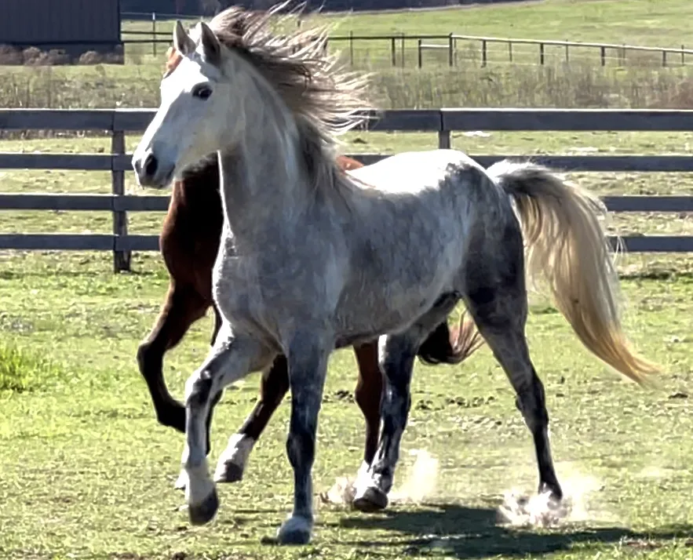
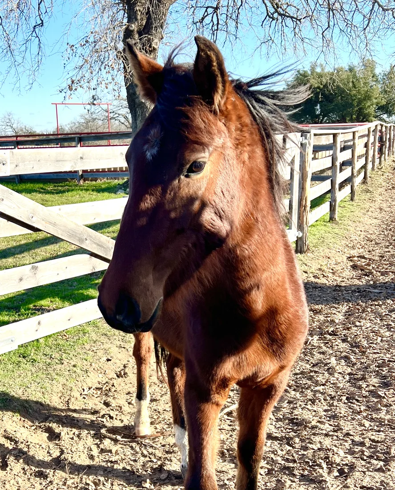
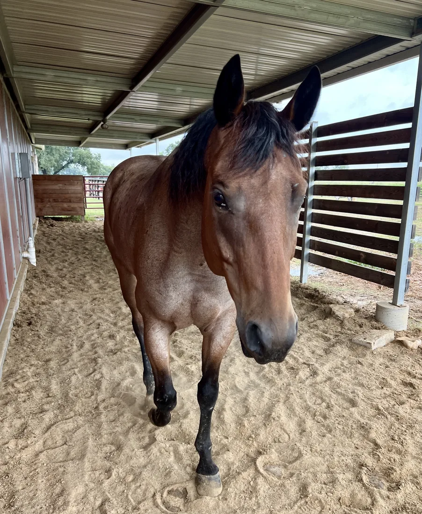
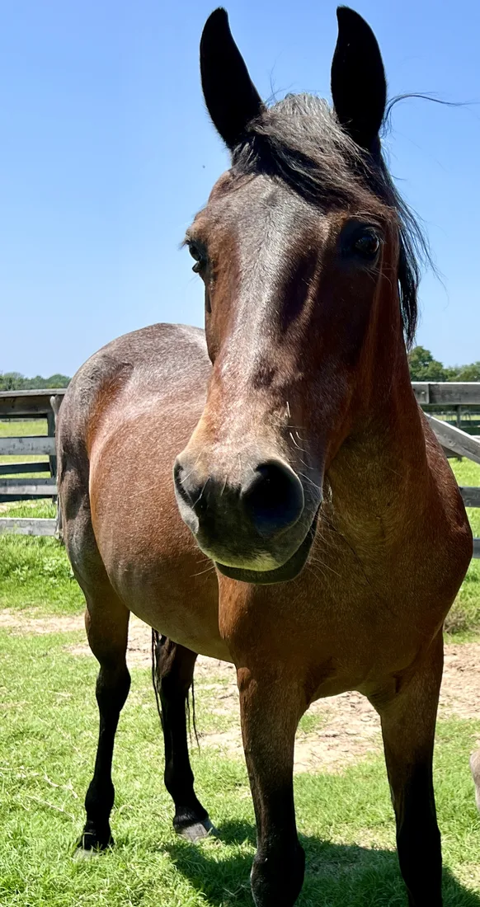
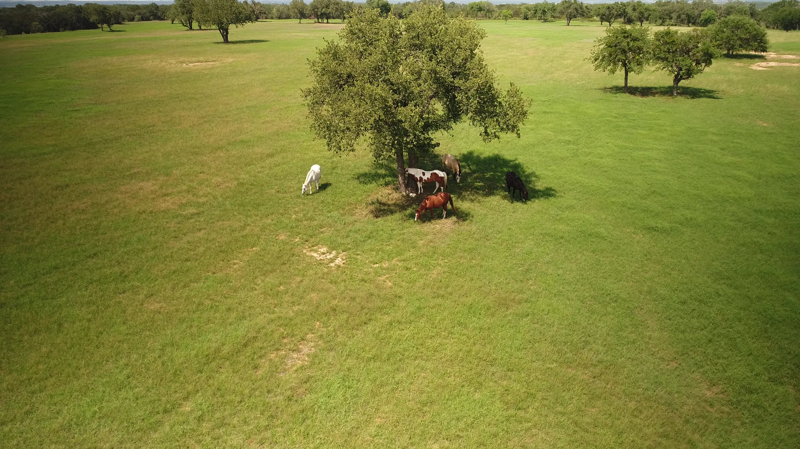
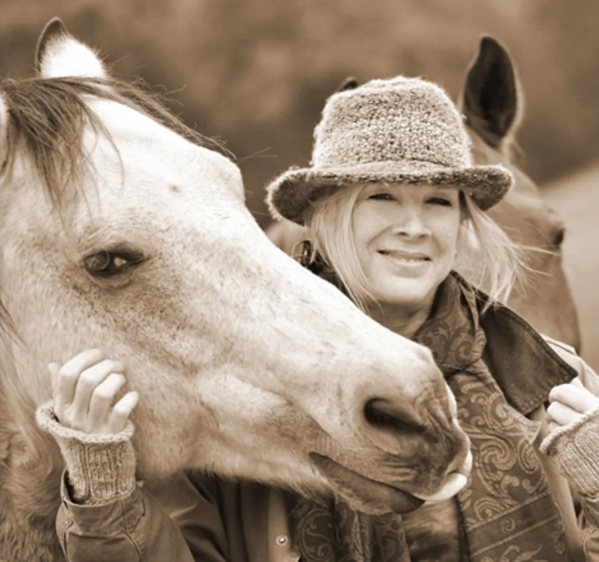

Blue Horse Sanctuary
Blue Horse Sanctuary is a permanent, forever home for senior, neglected, and rescued horses and donkeys, on 750 acres in the Texas hills.
We give lifelong care to horses and donkeys who have been retired, surrendered, or seized from neglect and abuse. Priority goes to seniors who have earned the right to live out their days in peace.
We believe in quality above quantity: every animal here receives singular attention, ample resources, and, above all, an abundance of love.
Our story →
They carried us on their backs across time and continents. Letting them live out their lives in dignity is the very least we can do in return.
Blue Horse SanctuaryEvery horse here arrived with a story, a mustang rounded up in Nevada, a roping horse with a torn tendon, a show horse scarred by the arena. Here, their story changes.

A “Big Lick” survivor, now barefoot and finally free to just be a horse.
His story →
Rounded up wild in Nevada. Curious, playful, and the sweet mascot of the herd.
His story →
Given no chance after an injury. He’s here, healing, and proving them wrong.
His story →
Rescued from severe neglect, and never far from her bonded friend Skipper.
Her story →A little context goes a long way. Here’s what a sanctuary actually is, why older horses need us most, and what your kindness really pays for.
Not a rescue that rehomes, and not a riding barn. A sanctuary is a promise: these animals stay for life.
Learn more → 02Horses can live 30 years, long past their “useful” years. That’s exactly when many are discarded.
Learn more → 03Hay, a farrierA farrier is a specialist who trims hooves and fits horseshoes, essential, ongoing care for every horse., the vet, dentistry. See what a gift really buys.
Learn more →
Tucked into the far western corner of Somervell County, our ranch is spring-fed ponds, coastal Bermuda fields, and oak-shaded hills, about 90 miles southwest of Dallas.
See the land →
Artist Melissa Auberty spent a lifetime painting these beautiful, sensitive animals. Blue Horse Sanctuary is how she gives back, turning her family ranch into a refuge for horses who have nowhere else to go.
Every dollar from her celebrated Blue Horse Series goes directly to the animals in our care.
Meet Melissa & the board →There’s no government funding here, just people who care. Every gift, purchase, and visit keeps a horse fed, sound, and safe.